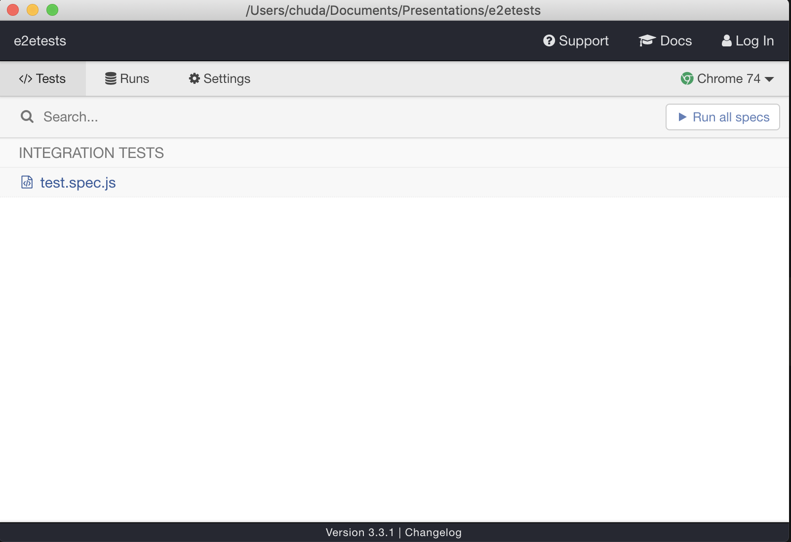

By Olga Filipova chudaol@gmail.com
Regression
Happy path
Automation
Well... or at least semi-automation
Hundreds of tools
Don't be lost
Identify your needs and expertise first!
$ cd /your/project/path
$ npm install cypress --save-dev
// cypress.json
{
"integrationFolder": "tests"
}
$ vim tests/test.spec.js
describe('Our first cypress test', () => {
it('Should match!', () => {
expect(true).to.be.true
})
})
$ npx cypress open

describe('Carmeq - Test search functionality', () => {
it('Should Find some results related to cars', () => {
cy.visit('https://www.carmeq.com')
// search input is not visible until we click the search button
cy.get('#ctrl_keywords_12').should('not.be.visible')
// click search button
cy.get('.search>a').click()
// now the search input is visible
cy.get('#ctrl_keywords_12').should('be.visible')
// type the search keyeord cars
cy.get('#ctrl_keywords_12').type('cars')
// click on submit button
cy.get('#ctrl_submit_12').click()
// the result page with the header containing the word results should appear
cy.get('.header').should('contain', 'Results')
})
})
describe('Carmeq - Test toggle menu functionality', () => {
it('Should open menu', () => {
cy.visit('https://www.carmeq.com')
// the menu should not be visible until we click the toggler
cy.get('#toggleOffCanvas').should('not.be.visible')
// click the toggler
cy.get('.navbar-toggler.offcanvas-toggler').first().click()
// now the menu should be visible
cy.get('#toggleOffCanvas').should('be.visible')
})
})
And there are more decisions to make
Should it be a part of CI/CD?
Should it be a dedicated team?
Should we invest in x-browser x-device testing?
???
Just remember - it is always better to have small and simple but working than complex and huge that will take a lifespan to implement